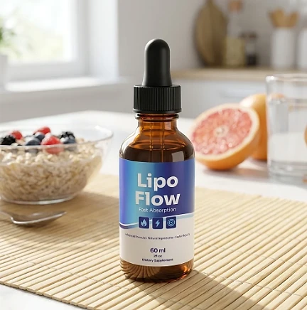
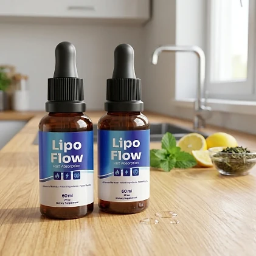
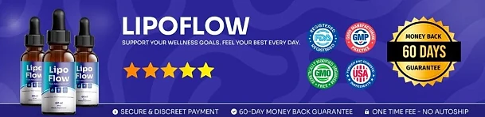

What Is Lipo Flow And How Does It Work?
Lipo Flow is a liquid dietary supplement designed to support healthy weight management, metabolism, and daily energy for adults who want to address stubborn weight, low energy, and cravings that make it hard to stay on track through a simple, plant-based approach — without complicated routines or temporary quick fixes.
It utilizes a daily dropper of liquid nutrients that combines Chromium with a 200 mg proprietary blend of botanicals and amino acids, including Green Tea, Guarana, African Mango, Coleus Forskohlii, Capsicum, Grapefruit, and Raspberry Ketones, to support a healthy metabolic rate, steady energy, and appetite control.
The front of the label presents Lipo Flow as a fast-absorption formula with "advanced formula, natural ingredients, faster results," and the official order page says it is manufactured to standards above what the FDA and Good Manufacturing Practices require, with every batch third-party tested.
Rather than acting as a short-lived artificial fix, Lipo Flow focuses on a whole-formula approach, working gradually alongside a balanced diet and regular physical activity to help maintain healthy weight management and steady energy over time.
With consistent daily use, the formula is intended to support more even energy across the day and better control of cravings, especially when combined with mindful eating, good sleep, and regular movement.
From a practical standpoint, Lipo Flow is a daily liquid drop: a dropperful placed in the mouth and swallowed, with no capsules to swallow and no powders to mix.
Made in the USA with globally sourced ingredients and manufactured in an FDA-registered facility, according to the product label, Lipo Flow is designed for regular daily use, focusing on safety, purity, and quality for those seeking a natural, non-prescription route to weight management support.
Lipo Flow Ingredients
Every 1 ml serving of Lipo Flow contains 0.7 mcg of Chromium (as Chromium Picolinate) plus a 200 mg proprietary blend of botanicals and amino acids, as listed on the Supplement Facts panel. These are some of its best-known components:
Chromium Picolinate: An essential trace mineral that supports healthy glucose metabolism, which plays a role in appetite and energy.
Green Tea Leaf Extract: A natural source of catechins that supports a healthy metabolic rate.
Guarana Seed Extract: A natural source of caffeine that supports energy and alertness.
African Mango Seed Extract: A fruit seed extract commonly found in weight management formulas.
Coleus Forskohlii Root Extract: A traditional botanical included in many metabolism support blends.
Capsicum and Grapefruit Fruit Extracts: Pepper and citrus extracts often used to support thermogenesis and metabolism.
Together, these ingredients are designed to support metabolism, energy, and appetite control from within. The label also lists Maca, Grape Seed, Eleutherococcus, Astragalus, Gymnema, Panax Ginseng, Raspberry Ketones, GABA, and amino acids such as L-Carnitine, L-Arginine, and L-Tyrosine in the same blend, without individual amounts. The chromium dose is small, 2% of the Daily Value. The other ingredients are glycerin, water, organic lemon extract, stevia extract, xylitol, sodium benzoate, potassium sorbate, citric acid, and natural flavors.
Lipo Flow is designed for daily use, offering a natural, non-prescription approach to supporting weight management, as long as it is combined with a balanced diet and regular physical activity.
Lipo Flow Side Effects
Lipo Flow is generally considered well tolerated and is designed for adults who are looking for a simple, plant-based approach to weight management support, especially those who prefer an easy daily dropper routine to support energy and metabolism without resorting to risky solutions.
According to the product label, Lipo Flow is made in the USA with globally sourced ingredients and manufactured in an FDA-registered facility, and the official order page says every batch is third-party tested, reinforcing consistency, safety, and reliability.
With no widespread reports of serious side effects, Lipo Flow is generally considered a well-tolerated option. Still, the blend includes Guarana and Green Tea, natural sources of caffeine, so people sensitive to caffeine, with heart conditions, or with high blood pressure should be careful. Grapefruit can interact with many prescription medications, Gymnema and Chromium can lower blood sugar, and Coleus may interact with blood pressure medication, so anyone taking medication should show the label to their doctor first. It is not intended to diagnose, treat, cure, or prevent any disease, and individual results may vary.
According to the label, pregnant or nursing mothers, children under the age of 18, and individuals with a known medical condition should consult a physician before using Lipo Flow. The label also says not to exceed the recommended dose, ensuring it fits safely within each person's wellness plan.
Lipo Flow Dosage
The recommended Lipo Flow dosage is one or two dropperfuls a day, as printed on the label, and it is designed to fit easily into a daily routine, making consistency simple and convenient. Formulated as an easy daily liquid, it requires no pills to swallow, no powders to mix, and nothing to measure beyond the dropper itself.
The label explains how to take it: shake well before each use, take one or two droppers full, place the liquid in the mouth, and swallow. It does not specify a time of day; because the blend includes natural sources of caffeine, many people prefer to take Lipo Flow in the morning, at the same time each day.
For best results, consistency is key. Each 2 fl oz (60 ml) bottle holds 60 servings of 1 ml, which lasts one to two months depending on the amount taken, and because metabolic support builds gradually, many people make it part of an ongoing wellness routine.
There is no need for complex schedules or multi-step routines. A simple daily dropper routine is designed to build lasting support gradually alongside a balanced diet, good sleep, and an active lifestyle. The label also advises keeping the bottle away from heat, light, and humidity to preserve freshness.
As with any dietary supplement, it's important not to exceed the recommended dose and to check the label on your bottle. Lipo Flow works best when used regularly, combined with proper hydration, balanced nutrition, and healthy daily habits.
Lipo Flow – Refund Policy
You can order Lipo Flow with confidence, knowing that every purchase is protected by a 60-day guarantee. According to the return policy, the 60 days start from the date of delivery, which allows you to try the formula and decide if it delivers the support you expect.
The policy explains the steps: confirm you are still within 60 days of delivery, email support with "Refund Request" in the subject line, and send all the bottles back, empty or not and opened or not, with a note containing your full name, email, and order number. Return shipping is paid by the customer.
How the refund process works: Ship all the bottles and the packing slip to 11870 62nd St N, Largo, FL 33773, the address listed in the return policy. Once the package arrives, the refund is processed within a few days, and you receive an email confirming it.
Customer Support Contact Information: contact@customercs.com or +1 925-231-0148, as listed on the contact page of the official website, which says the team replies within a matter of hours. The label also lists GEX Corp, Lakeland, FL, and +1 323-372-9581.
Refund Processing Time: According to the policy, the refund is processed a few days after the return is received; it may then take some time to appear on your statement, depending on your bank.
This refund policy is designed to give customers a clear path when trying Lipo Flow, with every step and the return address published on the official website.
Lipo Flow – Where To Buy
Lipo Flow is sold through its official website, so if you decide to try it, it's important to be careful about where you purchase it. The official website is the only sales channel the manufacturer lists, and it does not point to marketplaces such as Amazon, eBay, or Walmart.
Listings on third-party platforms may look similar but cannot be verified as authentic, raising concerns about safety, quality, and ingredient freshness. Products purchased outside the official source may not be covered by the 60-day guarantee.
For this reason, it makes sense to purchase Lipo Flow only through the official website. Buying directly from the official source ensures you receive the authentic original product, made in the USA, with access to customer support and the full guarantee. Orders placed there go through a secure checkout, and the return and contact pages are linked at the bottom of the official page.
To avoid counterfeit batches and ensure maximum quality, always verify that you are ordering from the official Lipo Flow website before completing your purchase.
To ensure you’re getting the authentic product, most users choose to visit the official website.
Is Lipo Flow A Scam?
Based on what the official website and the product label disclose, Lipo Flow does not appear to be a scam. It is a real liquid supplement, sold through an established retailer (BuyGoods), and formulated to support healthy weight management and metabolism as part of a consistent routine.
The ingredients used in Lipo Flow — Chromium plus a blend with Green Tea, Guarana, African Mango, Coleus Forskohlii, Capsicum, Grapefruit, and Raspberry Ketones — are common in metabolism formulas. The label lists all of them and the total of the blend, although not the amount of each ingredient.
In addition to its formula, Lipo Flow is made in the USA with globally sourced ingredients and manufactured in an FDA-registered facility, according to the product label, which also identifies the distributor, with an address and a phone number, with a focus on safety, purity, and consistency.
The official website publishes no customer testimonials, so this review does not quote any. The formula offers daily support for metabolism and energy, making Lipo Flow an option for those who want a simple addition to a healthy eating plan. Results vary from person to person, and no supplement replaces a balanced diet, exercise, or medical care.
Lipo Flow is backed by a 60-day guarantee counted from delivery, and the return steps and address are published on the official website, which gives customers a clear path if the product does not meet their expectations.
If you're looking for a simple daily liquid to support energy and weight management without complicated routines, Lipo Flow is worth considering — especially when purchased directly from the official website.
For those who want to verify product details or check current availability, the official Lipo Flow website remains the safest option.

Check Availability On Official Website
